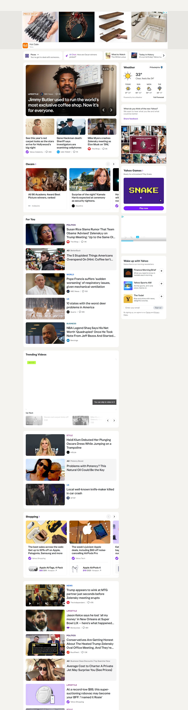
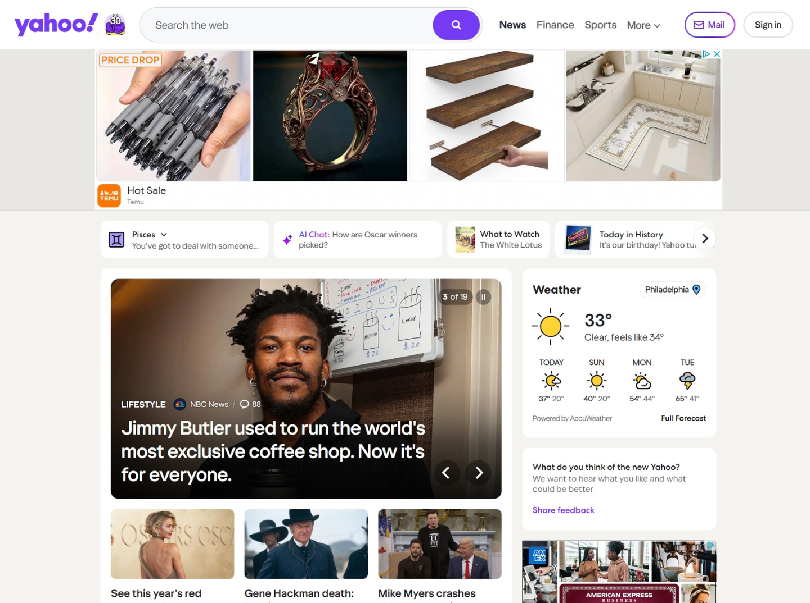
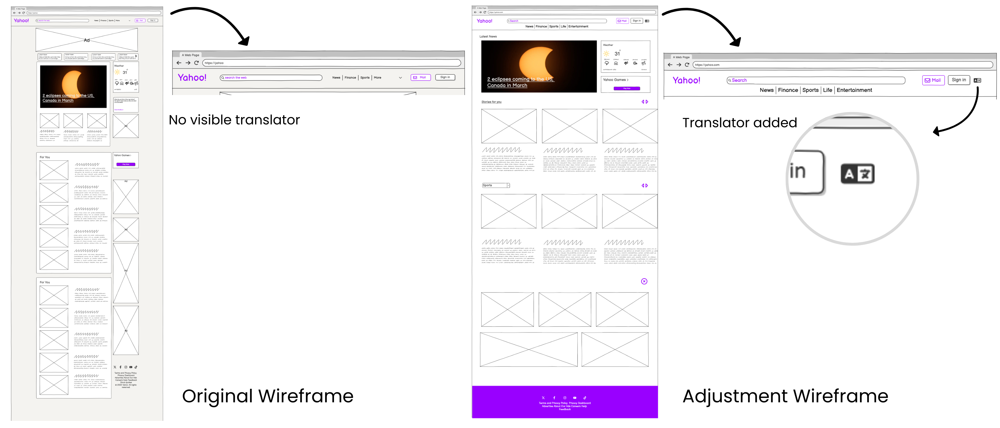
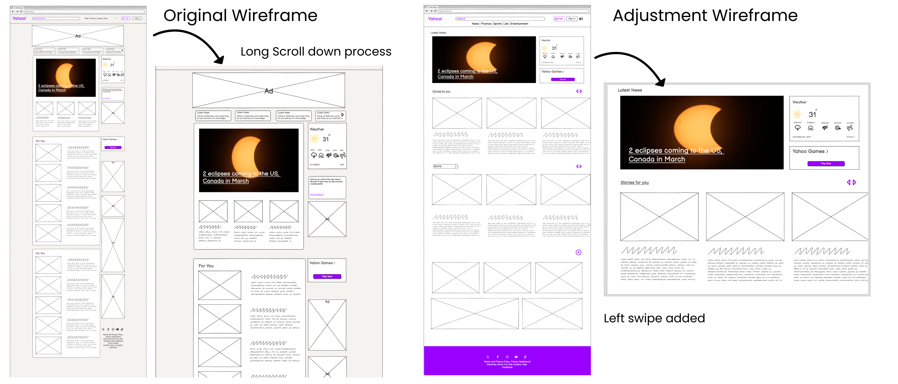
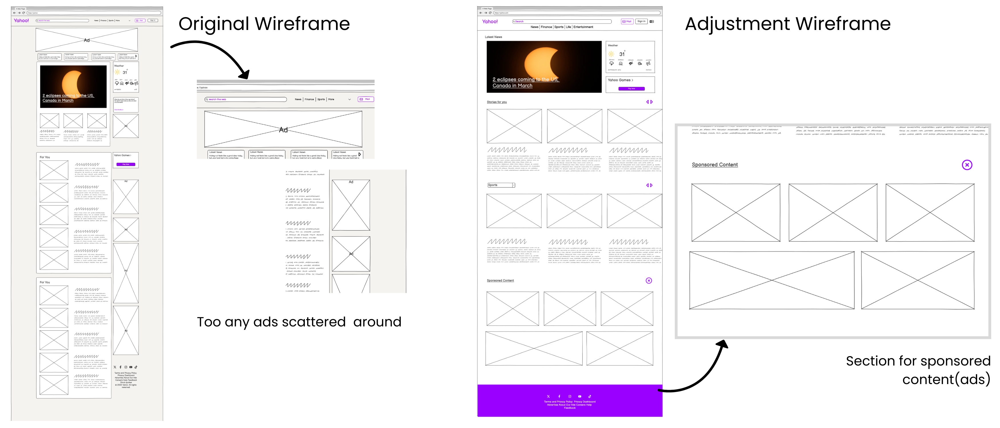

Yahoo redesign(Wireframe)*
Explore how a user-centered research process and low-fidelity wireframes reimagined key sections of the Yahoo website, focusing on clearer navigation, cleaner layouts, and a more intuitive flow that enhances user engagement.
TOOLS: Figma, Balsamiq
UX research
About this project
This project focused on reimagining the Yahoo website through UX research and wireframing to improve clarity, navigation, and user flow. The goal was to modernize the interface while keeping it intuitive and accessible for a diverse global audience.
Why a Redesign?
The Yahoo homepage presented several usability issues that hindered user engagement. Users frequently reported difficulty navigating the cluttered interface, finding relevant content, and understanding visual hierarchies. The redesign aimed to streamline navigation, improve discoverability, and create a cohesive visual experience that aligns with modern user expectations.
Constraints
The redesign was completed as a class project, which meant limited access to real user data and backend functionality. Additionally, Yahoo’s large-scale ecosystem and third-party integrations posed conceptual challenges in ensuring design consistency while maintaining familiarity for existing users.
Opportunities
This redesign provided an opportunity to reimagine Yahoo as a more accessible and inclusive platform. By simplifying navigation, emphasizing hierarchy, and integrating features such as a built-in language translator, the project aimed to enhance usability for a diverse global audience and reestablish Yahoo’s identity as a modern, user-centered platform.
Analysis and Redesign of Yahoo Website
Yahoo, a long-standing digital platform offering services like news, email, and finance, faces challenges in terms of usability and user experience. This analysis focuses on the experience and usability of Yahoo’s home page, proposing modifications based on three core design principles—Signifiers, Discoverability/Gulf of Execution, and Conceptual Models. The proposed changes aim to address issues such as content discoverability for international users, the cluttered presentation of key news content, and confusion between sponsored and editorial content. Each suggested modification is supported by wireframes and detailed explanations, demonstrating how these design principles can improve user satisfaction and streamline navigation on Yahoo’s platform (https://www.yahoo.com/).


1st change: Language translator added
First, a language translator is added to the header to improve discoverability for international users. This not only reduces the gulf of execution by making language options immediately visible, but also aligns with users’ mental models, allowing them to effortlessly switch languages.

Rationale: By integrating a language translator prominently in the header, Yahoo directly addresses the Gulf of Execution/Discoverability principle. This feature reduces the cognitive load for international or non-native users, as it makes language options immediately visible and accessible. In doing so, it aligns the interface with users’ mental models, ensuring that users can effortlessly switch to their preferred language. This streamlined navigation not only improves usability but also enhances global accessibility, ensuring that users can intuitively interact with the site from their very first visit.
2nd change : Left Swipe Mechanism added
Second, the landing page’s information architecture is redesigned to display key news content through a swipe-left mechanism rather than requiring users to scroll down. This approach leverages signifiers—visual cues and intuitive gestures—to guide users horizontally through the news feed, making it clear where to find important stories.

Rationale: Yahoo’s landing page often suffers from overwhelming amounts of content, which can lead to decision fatigue. By reorganizing the layout into swipeable segments, related news items are grouped together and clearly labeled, applying both physical and logical constraints to the interface. This method not only reduces visual clutter but also uses signifiers to indicate that more content is available to the left, enabling users to navigate easily through news stories. The result is a streamlined, engaging presentation that helps users quickly identify and access the content they need while minimizing distractions.
3rd change: Section for sponsored content(ads)
Yahoo’s interface often blends sponsored content with editorial material, which can confuse users about what is paid versus what is genuine editorial content. To address this, the proposed change is to create a dedicated section for sponsored content that is visually distinct from the rest of the homepage. This section would use clear labels, such as "Sponsored," and unique design elements like contrasting background colors or borders to differentiate it from editorial content.

Rationale: This change leverages Don Norman’s principles by using visual signifiers and constraints to guide user perception. By clearly segregating sponsored content, the interface signals its purpose without requiring users to recall information about content origins. The visual cues—such as distinct backgrounds or labeling—act as signifiers that immediately inform users of the nature of the content, thereby reducing cognitive load and preventing accidental clicks. Additionally, by confining sponsored content to a designated area, the design imposes logical constraints that reinforce users’ mental models, creating an intuitive mapping between content types and their placement. This not only enhances the clarity of the page but also builds trust by ensuring transparency about what is paid content, ultimately leading to a more satisfying and efficient user experience.
Conclusion
By applying these established design principles—Gulf of Execution/ Discoverability, Conceptual Models, and Signifiers—Yahoo can significantly enhance its user experience. These targeted refinements address pressing usability challenges such as cluttered navigation, overwhelming content, and inconsistent visuals while also incorporating inclusive features like a language translator. This strategic approach not only makes every user interaction more intuitive and efficient but also bridges the gap between user expectations and system functionality, ultimately fostering sustained engagement and long-term satisfaction.